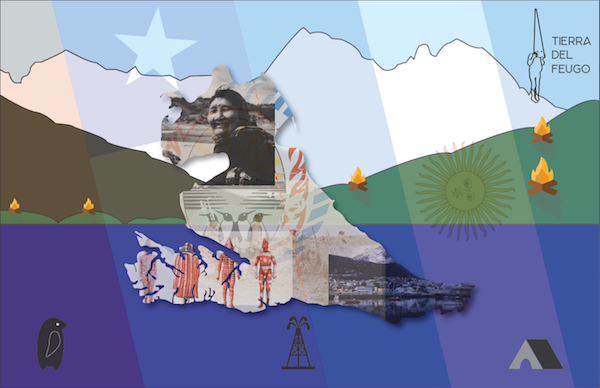
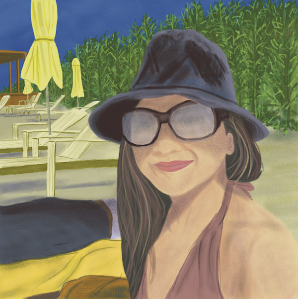

Gesture in Perspective - FIN-111 Drawing & 2D Language II

Illustraded Map of Tierra Del Feugo - IMG-102 Computer Graphics I

Nice Day at the Beach - FIN-111 Drawing & 2D Language II
Super Text Web Landing Page - IMG-112 Typography